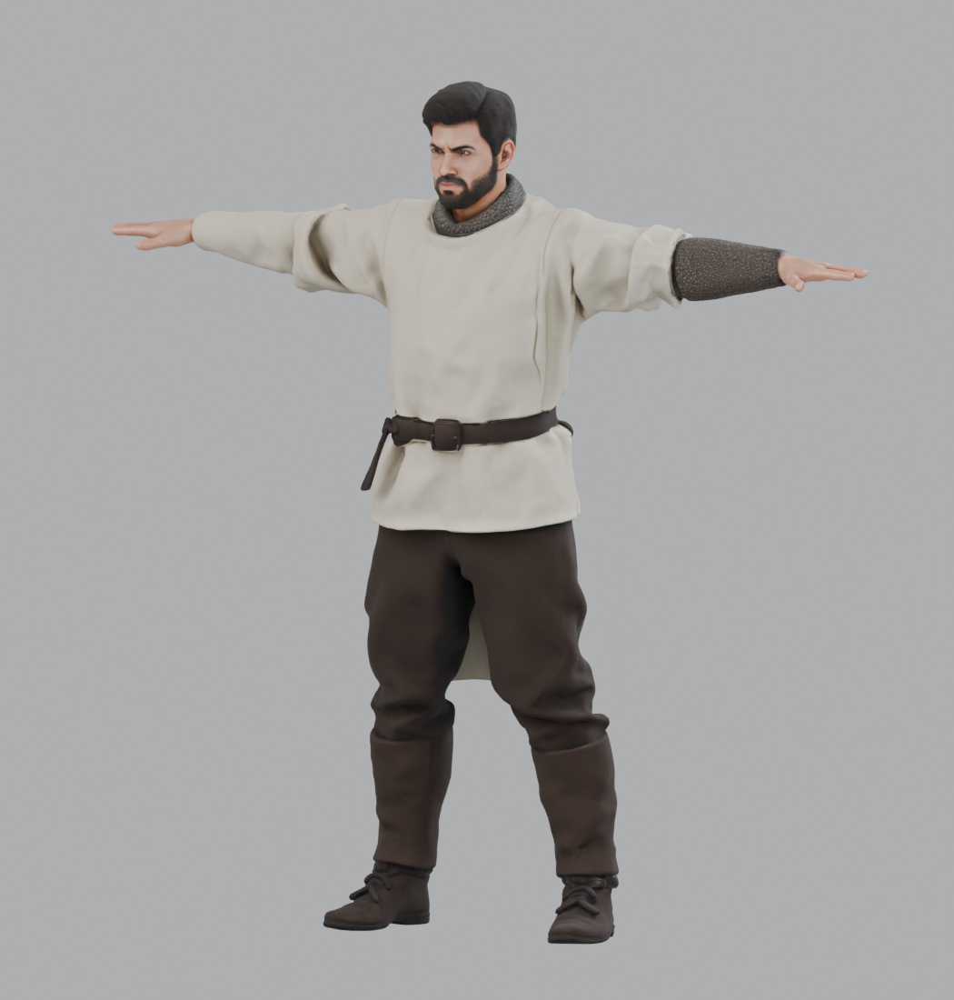
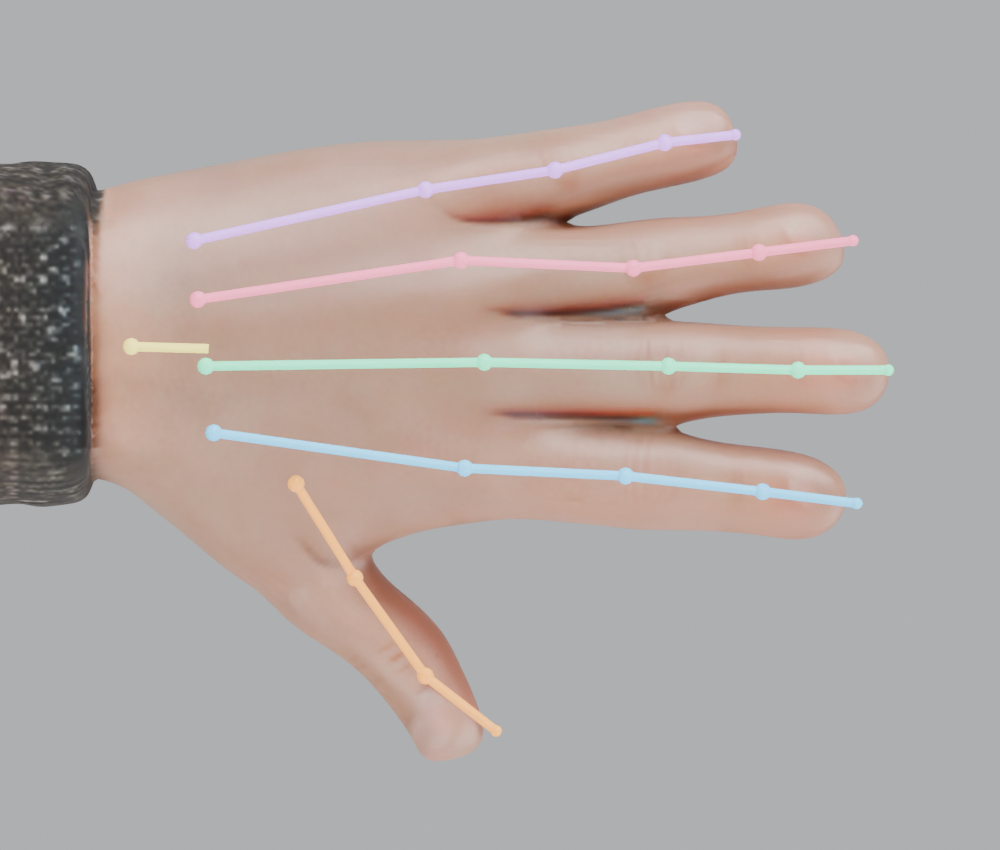
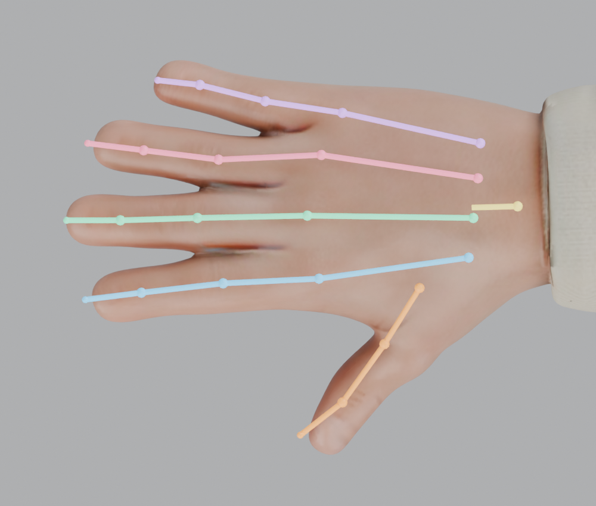
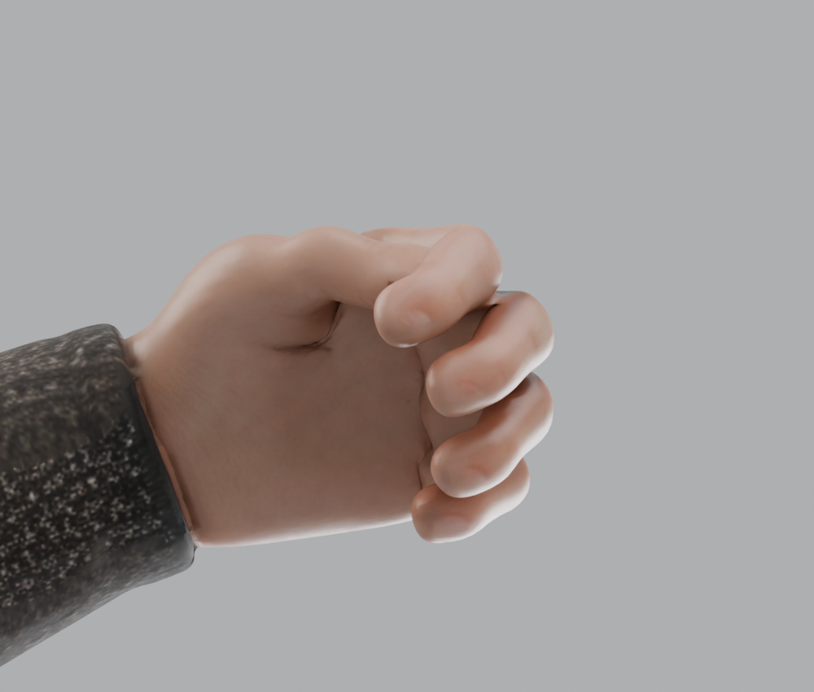
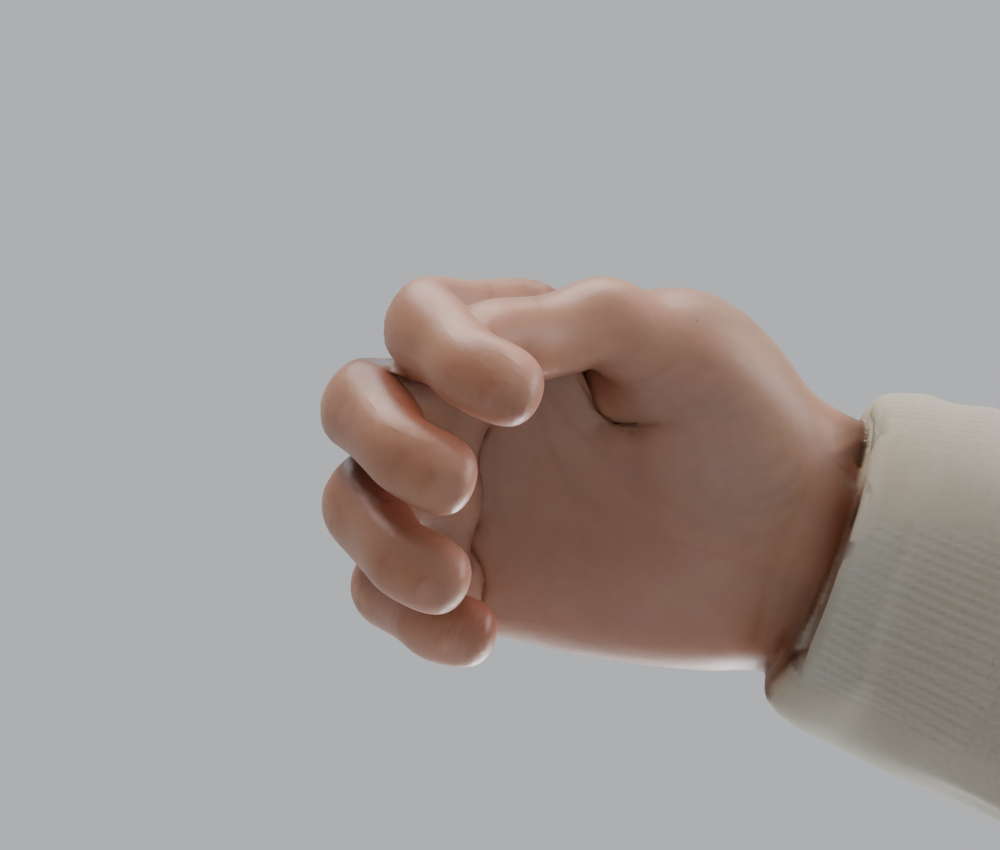
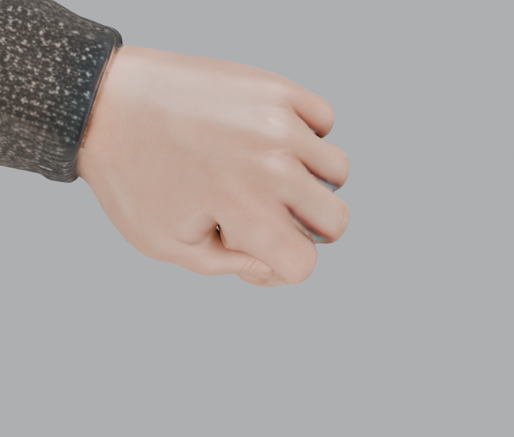
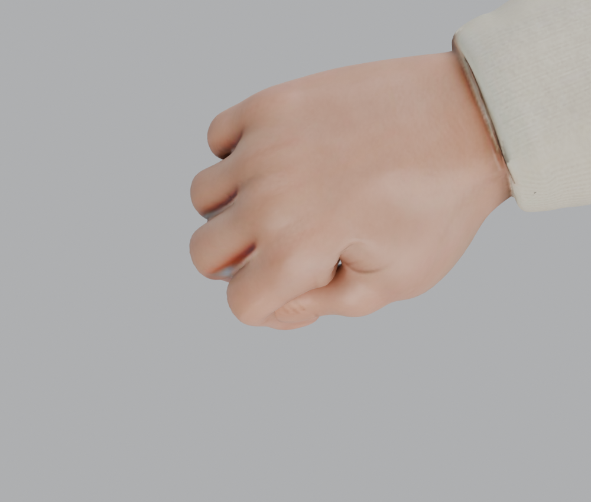
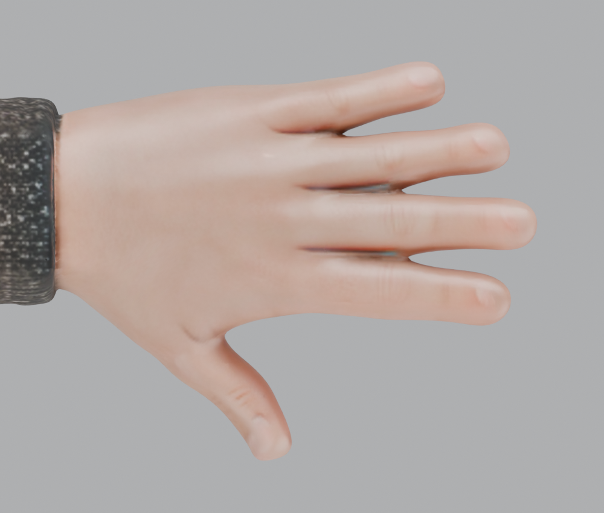
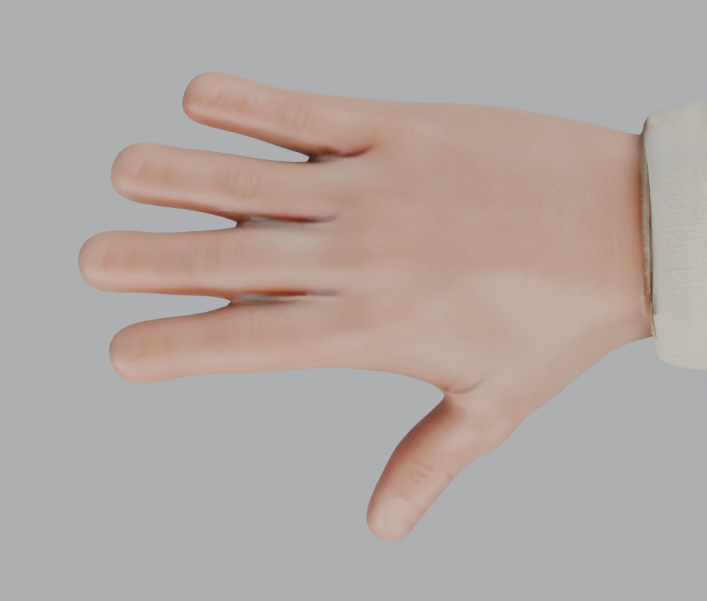

MOTION ARCHIVE — VOL. 01
让骑士，动起来。骨骼、步态与每一次屈指。
从全身运动到指尖细节。
在同一套人体骨架上，查看每一个动作。
- 骨骼
- 60
- 动作
- 08
- 部件
- 16
01 / 动作展厅
正在准备展品
LIVE / ANIMATION STUDY
01
待机
IDLE
拖动旋转 · 滚轮缩放
0.00s—
自然站姿与轻微呼吸，查看整体骨架的稳定性。
—空格 播放 / 暂停 · S 骨架 · G 同屏 · 1—8 切换动作动作来自模型内置动画 · 本地资源，无需联网
A CLOSER LOOK
02 / 绑定图鉴
从静止姿态到握持，仔细看手部结构。
点击图片，查看原尺寸。


全身静止姿态BODY / REST


左手 · 掌骨与指骨LEFT / SKELETON


右手 · 掌骨与指骨RIGHT / SKELETON


左手 · 掌心握持LEFT / PALM


右手 · 掌心握持RIGHT / PALM


左手 · 手背屈指LEFT / DORSUM


右手 · 手背屈指RIGHT / DORSUM


左手 · 静止手型LEFT / REST


右手 · 静止手型RIGHT / REST
CONTINUE THE STUDY
把动作，带进你的场景。
完整模型用于继续制作，轻量预览版用于快速查看。
Blender 源文件保留骨骼与全部动作，方便进一步调整。